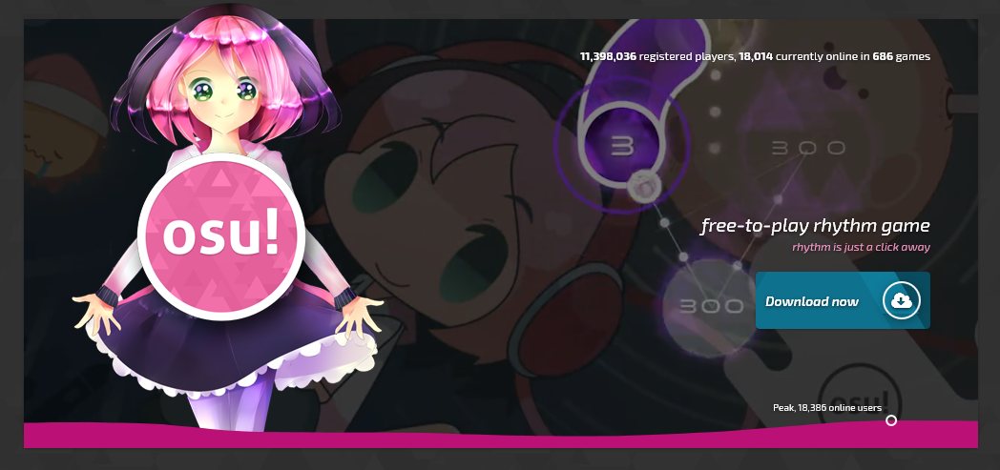

О сайте:
Данный сайт разработан в качестве индивидуального задания учебной практики. Тема выбрана по причине, что автор длительное время занимался созданием карт для osu!, и способен самостоятельно её рассмотреть в достаточном объеме. Игра с первого взгляда может показаться слишком простой, а создание карт для неё - делом незначительным. Однако у всего есть множество ньюансов; эта игра является уникальным явлением, на изучение которого может уйти достаточно много времени.
